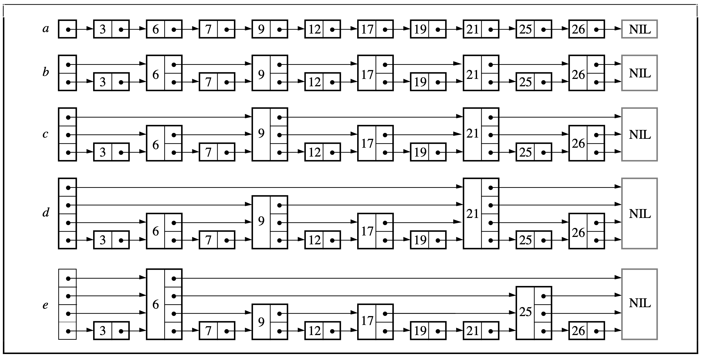

In this project, I implement a hash table from scratch in C, its associated methods, and also show output from testing.

In this project, I implement a skip list from scratch in C, its associated methods, and also show output from testing and use.
This is a game I developed in Unity about a shrimp named Larry. A little shrimp named Larry swims in a tank and eats biscuits with his fish friends. Help Larry find the biscuits and enjoy his tank life.